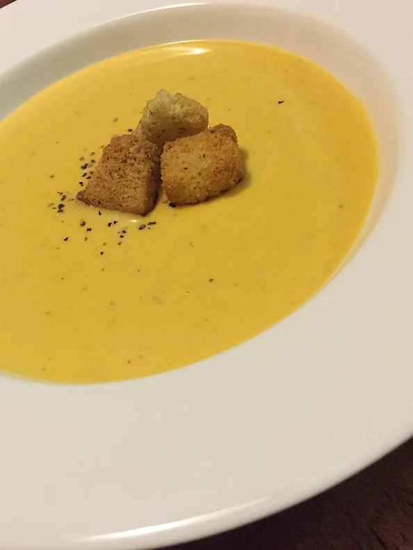

Butternut Squash Soup

Delicious and very easy to make.
You can use 3 to 4 cups of chicken broth instead of the water and bouillon cubes.
Also works well with half as much cream cheese if you don't want it too rich.
Ingredients
- 6 tablespoons chopped onion
- 4 tablespoons margarine
- 6 cups peeled and cubed butternut squash
- 3 cups water
- 4 cubes chicken bouillon
- half teaspoon dried marjoram
- quarter teaspoon ground black pepper
- eigth teaspoon ground cayenne pepper
- 2 (8 ounce) packages cream cheese
Putting it together
-
In a large saucepan, saute onions in margarine until tender.
Add squash, water, bouillon, marjoram, black pepper and cayenne pepper.
Bring to boil; cook 20 minutes, or until squash is tender
-
Puree squash and cream cheese in a blender or food processor in batches until smooth.
Return to saucepan, and heat through. Do not allow to boil.